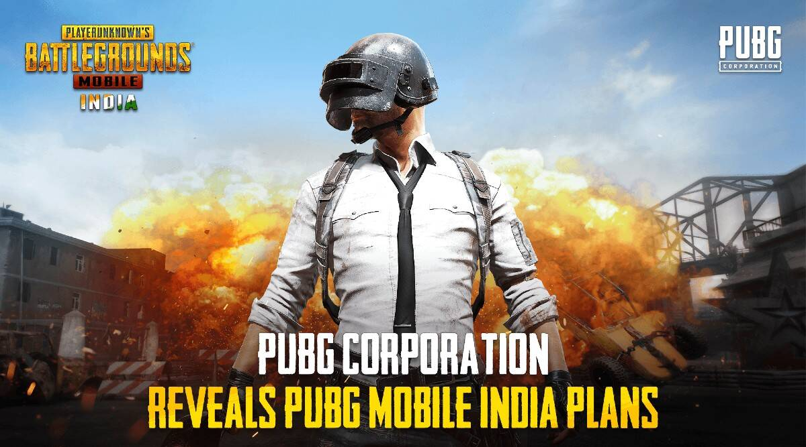

PUBG MOBILEfeatures gameplay similar to that of the original PlayerUnknown's Battlegrounds. Players parachute down to a remote island and fight to remain as the last player standing, competing alone or in teams of two or four, depending on the game mode selected before the match.
Each match lasts about 30 minutes. It takes exactly 32 minutes and 50 seconds for the zone to close completely. After that, another 11 seconds or so until you die inside the zone, so potential max of about 33 minutes and 10 seconds if you try to heal yourself. To watch about pubg mobileclick here
watch this image for better understanding 
To log in pubg mobile
List of guns....
m416
short gun
uzi
m16a4
pistol
dushum dishum
dishum dishum
dishum dishum
dishum dishum
dishum dishum
Every few minutes, the map's playable area shrinks towards a random location, with any player caught outside the safe zone taking incremental damage and eventually being eliminated if the safe zone is not entered in time; in game, the boundary appears as a shimmering blue wall that contracts over time.
This results in a more constrained map, which increases the likelihood of encounters. Random regions of the map are highlighted in red and bombed during the match, posing a threat to players who remain in that area.
This results in a more constrained map, which increases the likelihood of encounters. Random regions of the map are highlighted in red and bombed during the match, posing a threat to players who remain in that area.
If you guys want to see the youtube channell of the website authorclick here